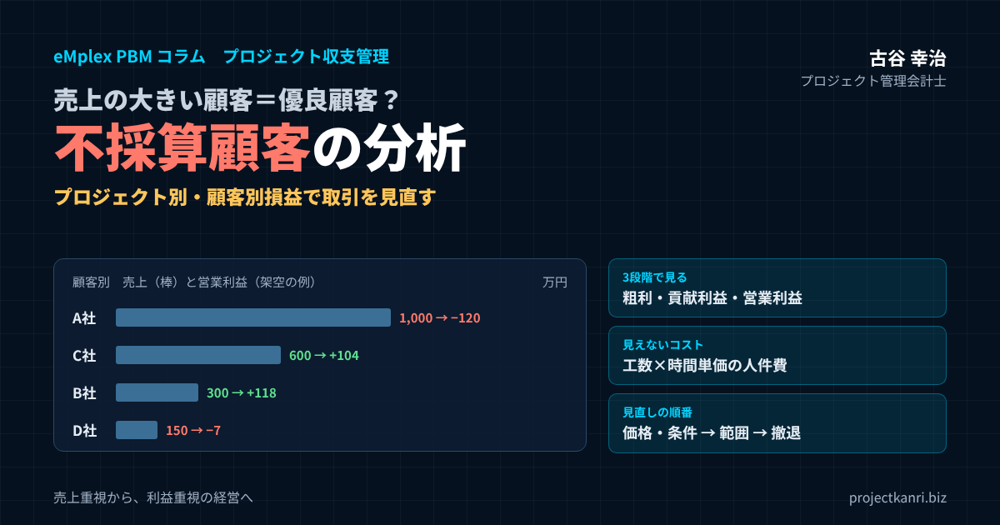

不採算顧客の分析とは？顧客別・プロジェクト別損益から取引を見直し利益率を改善する方法―顧客別損益の計算方法、人件費・工数・間接費の配賦、不採算顧客の見つけ方、価格改定・取引条件の見直しと継続・撤退の判断基準

結論：売上の大きい顧客が、優良顧客とは限らない
この記事のポイント
- 売上の大きい顧客が優良顧客とは限らない。顧客ごとの本当の利益を見る
- 顧客別損益は粗利・貢献利益・営業利益の3段階で考える
- 人件費は工数×時間単価で原価に。顧客対応の時間も記録する
- 取引継続の判断は貢献利益が基本。間接費配賦後の赤字だけで撤退するとかえって利益が減ることも
- 見直しの順番は価格・条件→工数・サービス範囲→縮小・撤退
- 受注前の採算チェックで、不採算の取引を新たに生まない
プロジェクト管理会計士の古谷です。経営の数字をご支援していると、「売上は伸びているのに、利益が増えない」というご相談を頻繁にいただきます。その原因を一緒に調べていくと、多くの場合、顧客ごとの利益が見えていないという問題に行き着きます。
多くの会社は、顧客を売上の大きさで評価しています。売上の上位の顧客は「重要顧客」として手厚く対応され、値引きの要請や追加の要望にも応えます。しかし、その手厚い対応のコストを差し引くと、利益がほとんど残っていない、あるいは赤字になっている顧客が少なくありません。一方で、売上は小さくても、高い利益率で、会社の利益を静かに支えている顧客もいます。
不採算顧客の分析とは、この違いを数字で明らかにすることです。顧客ごとに、売上だけでなく、プロジェクトの原価、社員の人件費、営業や対応のコスト、間接費までを集計し、本当の利益を把握する。そのうえで、価格の改定、取引の条件の見直し、サービスの範囲の調整、そして取引の継続、縮小、撤退を判断する。これが、本記事のテーマです。
ただし、最初にお伝えしておきたいことがあります。不採算顧客の分析は、顧客を切り捨てるための作業ではありません。多くの不採算は、取引の条件や、社内の仕事の進め方を見直すことで改善できます。そして、後ほど数値例でお示しするように、間接費まで配賦した結果だけを見て撤退を判断すると、かえって会社全体の利益を減らしてしまうことがあります。分析の目的は、利益の出る取引の形を、顧客とともに作り直すことにあります。
不採算顧客とは？売上と利益の違い
不採算顧客とは、その顧客との取引から得られる利益が、取引にかかるコストに見合っていない顧客のことです。会計の上で赤字になっている顧客だけでなく、利益が出ていても、会社が目標とする利益率を大きく下回っている顧客も、広い意味では不採算顧客と言えます。
売上と利益は、まったく別のものです。売上は、顧客から受け取る金額です。利益は、その売上から、取引のためにかかったすべてのコストを差し引いた残りです。売上が大きくても、コストがそれ以上にかかっていれば、利益はマイナスになります。
| 売上 | 利益 | |
|---|---|---|
| 意味 | 顧客から受け取る金額 | 売上から取引にかかったすべてのコストを差し引いた残り |
| 分かること | 取引の規模 | 取引の健康状態・会社への貢献 |
| 見え方 | 請求書・損益計算書で見える | 顧客別に集計しないと見えない |
| 評価の落とし穴 | 大きい顧客＝重要顧客と思いがち | 人件費・対応コストを含めないと過大に見える |
たとえば、売上1,000万円の顧客と、売上300万円の顧客があったとします。売上だけを見れば、前者のほうがはるかに重要な顧客です。しかし、前者の取引では、外注費が大きく、社員の工数も多くかかり、さらに頻繁な仕様の変更や追加の対応で、営業やプロジェクトマネージャーの時間も取られている。後者の取引は、社員が少ない工数で対応でき、追加の要望もほとんどない。こうした場合、利益で見ると、後者のほうが会社にとって価値のある顧客だということが起こり得るのです。
この違いは、会社全体の損益計算書を見ているだけでは分かりません。損益計算書は、すべての顧客の取引を合計した数字だからです。顧客ごとに売上とコストを分けて集計する、顧客別損益の仕組みがあってはじめて、見えてきます。
不採算かどうかの線引きは、会社によって異なります。赤字かどうかだけでなく、会社として目標とする粗利率や貢献利益率を決め、それを下回る顧客を「要注意の顧客」として扱うのが実務的です。たとえば、会社全体の粗利率の目標が30%であれば、粗利率が20%を下回る顧客を要注意とする、といった基準です。基準があれば、営業やプロジェクトの現場も、どの顧客の採算を気にかけるべきかが分かります。
なぜ顧客別損益の分析が必要なのか：売上はあるのに利益が出ない理由
売上はあるのに利益が出ない。この状態に陥っている会社には、いくつかの共通点があります。
| 共通点 | 起きていること |
|---|---|
| 売上で営業を評価 | 値引きしてでも受注し、低利益率の受注が増える |
| 人件費が原価に入っていない | どの顧客にどれだけ人件費を使ったか分からない |
| 見積もり外の対応 | 追加の打ち合わせ・修正・急ぎ対応が無償で積み重なる |
| 不利な取引条件 | 長い支払サイト・遅い検収・値引き慣行が利益と資金を圧迫 |
一つ目は、売上の大きさで営業を評価していることです。営業の担当者は、売上の目標を達成するために、値引きをしてでも受注を取りにいきます。その結果、売上は伸びても、利益率の低い受注が増えていきます。
二つ目は、社員の人件費が、顧客やプロジェクトの原価として把握されていないことです。プロジェクト型ビジネスでは、コストの多くは社員の人件費です。しかし、社員の人件費が、販売費及び一般管理費や、部門の費用としてまとめて計上されているだけでは、どの顧客のためにどれだけの人件費を使ったのかが分かりません。
三つ目は、見積もりに含まれていない対応のコストです。追加の打ち合わせ、細かな修正の依頼、急ぎの対応、報告書の作成。一つひとつは小さな対応でも、積み重なると大きな工数になります。これらが記録されず、請求もされていなければ、その分だけ利益が削られていきます。
四つ目は、取引の条件です。支払いの期日が長い、検収が遅い、値引きの慣行がある。こうした条件は、損益計算書には直接表れにくいものの、資金の負担や事務のコストとして会社の利益を圧迫します。
顧客別損益の分析は、これらの見えないコストを、顧客ごとに明らかにするための道具です。見えないものは、改善できません。見えるようにすることが、利益の改善の第一歩なのです。
そして五つ目は、これらの問題が、会社全体の数字の中に埋もれて見えないことです。会社全体では利益が出ていれば、一部の顧客の不採算は、他の顧客の利益によって覆い隠されます。業績が好調なときほど、不採算顧客の問題は見過ごされがちです。業績が悪化して初めて、どこで利益が失われていたのかを探し始めることになります。
顧客別損益の考え方：粗利・貢献利益・営業利益の3段階
顧客別損益を計算するときには、どこまでのコストを顧客ごとに集計するのかによって、いくつかの段階があります。私は、次の三つの段階で考えることをおすすめしています。
| 段階 | 計算 | 用途 |
|---|---|---|
| ① 粗利（売上総利益） | 売上 −（外注費＋労務費＋直接経費） | プロジェクトの採算、価格の妥当性 |
| ② 貢献利益 | 粗利 −（営業・見積もり・契約・請求・問い合わせ対応などの顧客対応コスト） | 取引継続の判断の中心 |
| ③ 営業利益 | 貢献利益 − 間接費・共通費の配賦額 | 顧客の全体像の把握、価格水準の検討 |
顧客ごとの営業利益の合計は、会社全体の営業利益と一致します。
一つ目の段階は、売上総利益、いわゆる粗利です。顧客の売上から、その顧客のプロジェクトに直接かかった原価、つまり外注費、社員の労務費、直接の経費を差し引いたものです。プロジェクト別の損益を顧客ごとに合計すると、この粗利が求められます。
二つ目の段階は、貢献利益です。粗利から、その顧客との取引のために直接かかった、プロジェクトの原価以外のコストを差し引いたものです。営業の担当者の活動の時間、見積もりの作成、契約の手続き、請求や回収の事務、顧客からの問い合わせへの対応などがこれにあたります。貢献利益は、その顧客との取引が、会社の固定費の回収と利益にどれだけ貢献しているかを示します。
三つ目の段階は、営業利益です。貢献利益から、本社の管理部門の費用や、オフィスの家賃などの共通費を、一定の基準で配賦して差し引いたものです。顧客ごとの営業利益を合計すると、会社全体の営業利益と一致します。
どの段階の利益を見るかは、目的によって使い分けます。後ほど詳しく述べますが、取引を続けるかどうかの判断には、貢献利益を中心に見ることが大切です。間接費を配賦した営業利益は、顧客の全体像を把握したり、価格の水準を考えたりするときに使います。
限界利益という言葉が使われることもあります。限界利益は、売上から、売上に比例して増える変動費を差し引いた利益です。プロジェクト型ビジネスでは、社員の人件費を変動費と見るか固定費と見るかで、限界利益の意味が変わります。社員の人件費は、短期的には固定費ですが、プロジェクトの原価として工数で配分しているため、本記事では、プロジェクトの原価を差し引いた粗利から、さらに顧客対応のコストを差し引いた貢献利益を、取引の判断の中心に据えています。どの定義を使うにしても、社内で定義をそろえておくことが大切です。
プロジェクト別損益の分析方法：顧客別損益の土台
プロジェクト型ビジネスでは、顧客別損益の土台になるのは、プロジェクト別の損益です。顧客の売上とコストの大部分は、個々のプロジェクトを通じて発生するからです。プロジェクトごとに売上と原価を集計し、それを顧客の単位で合計することで、顧客別の粗利が求められます。
| 原価 | 内容 | 集計の方法 |
|---|---|---|
| 外注費 | 協力会社・フリーランスへの支払い | 発注・請求書をプロジェクトコードとひもづけ |
| 労務費 | 社員の人件費 | タイムシートの工数 × 時間単価 |
| 直接経費 | 旅費交通費・機材・ライセンスなど | 経費精算をプロジェクトコードとひもづけ |
プロジェクト別の原価は、外注費、労務費、直接経費の三つに分けて集計するのが基本です。外注費と直接経費は、請求書や経費の精算を、プロジェクトのコードとひもづけて記録すれば集計できます。難しいのは労務費です。社員の給与は、プロジェクトごとに支払われるわけではないからです。
プロジェクト別の損益を見るときには、受注の時点の見積もりの利益、進行中の着地の見通しの利益、完了の時点の実績の利益を比べることが大切です。見積もりの段階で利益率が低い案件なのか、進行中に原価が膨らんだ案件なのか。原因によって、打つべき手が変わるからです。見積もりの段階から利益率が低いのであれば、価格や受注の判断に問題があります。進行中に原価が膨らんだのであれば、仕様の変更の管理や、プロジェクトの運営に問題があります。
顧客別に見るときも、プロジェクトの単位まで掘り下げられるようにしておきましょう。顧客全体では利益が出ていても、特定のプロジェクトだけが大きな赤字になっていることがあります。逆に、顧客全体では赤字でも、原因は一つの大型のプロジェクトで、他のプロジェクトは健全だということもあります。顧客からプロジェクトへ、ドリルダウンして原因を確かめられることが、正しい判断の前提です。
プロジェクトのコードの運用も、プロジェクト別損益の精度を左右します。一つの顧客の複数の案件を一つのコードにまとめてしまうと、案件ごとの採算が見えなくなります。逆に、細かく分けすぎると、工数の入力が煩雑になります。受注の単位、つまり契約や注文書の単位でコードを発行し、それを顧客のコードにひもづけるのが、実務では扱いやすい方法です。保守や運用のように継続する仕事は、年度や月の単位でコードを分けておくと、期間ごとの採算を比べやすくなります。
人件費・工数の把握：見えないコストを金額にする
プロジェクト型ビジネスの不採算の多くは、人件費の見えにくさから生まれます。外注費は請求書という形で目に見えますが、社員の人件費は、顧客ごとに請求書が来るわけではありません。そのため、社員がどの顧客のためにどれだけの時間を使っているのかを記録しなければ、人件費はコストとして意識されにくいのです。
人件費を顧客やプロジェクトの原価にするための基本的な方法は、工数に時間単価を掛けることです。社員が日々、どのプロジェクトに何時間を使ったのかをタイムシートで記録し、その時間に、社員の等級や職種ごとに決めた時間単価を掛けます。
| 項目 | 内容 |
|---|---|
| 人件費の総額 | 給与＋賞与＋法定福利費＋福利厚生費など（等級・職種ごと） |
| 分母の時間 | 所定労働時間の総額、または稼働可能時間 |
| 時間単価 | 人件費の総額 ÷ 分母の時間 |
| 労務費原価 | プロジェクトの工数 × 時間単価 |
どの方法を採るかは会社の方針として決め、継続して適用します。
時間単価の計算では、給与だけでなく、賞与、法定福利費、福利厚生費なども含めた人件費の総額を使います。分母となる時間は、所定の労働時間の総額を使う方法と、実際にプロジェクトに使える時間、つまり稼働の時間を使う方法があります。稼働の時間を分母にすると、時間単価は高くなり、プロジェクトに使わなかった時間の人件費も、プロジェクトの原価に含めて回収すべきコストとして扱うことになります。どちらの方法を採るかは、会社の方針として決め、継続して適用することが大切です。
工数の記録で特に重要なのは、プロジェクトの作業だけでなく、顧客への対応の時間も記録することです。営業の担当者が見積もりの作成に使った時間、プロジェクトマネージャーが顧客との打ち合わせや調整に使った時間、技術者が問い合わせに対応した時間。こうした時間が記録されていれば、どの顧客の対応に手がかかっているのかが、金額として見えるようになります。
工数の管理と原価の計算については、別のコラム「稼働率分析の実践ガイド」や「プロジェクト別原価計算における部門別組織と営業・管理部門の役割」でも詳しく解説していますので、あわせてご覧ください。
工数の記録の精度には限界があることも、理解しておく必要があります。社員が一日の終わりに、記憶をたよりに工数を入力していれば、細かな対応の時間は漏れがちです。とくに、顧客からの電話やメールへの短い対応は、記録されにくい時間です。完璧な記録を求めすぎると、入力の負担が大きくなり、かえって記録が定着しません。まずは主要な作業を確実に記録し、顧客対応の時間は、一定の期間だけ詳しく記録してもらって傾向をつかむ、といった工夫も有効です。
間接費・共通費の配賦：配賦基準の選び方
顧客別の営業利益まで求めるためには、本社の管理部門の費用やオフィスの家賃といった、特定の顧客に直接ひもづかない間接費を、何らかの基準で顧客に配賦する必要があります。
| 配賦基準 | 長所 | 注意点 |
|---|---|---|
| 売上高 | 計算が簡単 | 手間のかかる小口顧客のコストが過小評価されがち |
| 工数 | 手間の実態に近い | 工数の記録が前提 |
| プロジェクト件数・取引件数 | 小口・多頻度の手間を反映 | 案件の規模の違いを反映しにくい |
| 活動基準（ABC） | 請求・問い合わせなど活動の回数で配賦し実態に最も近い | 活動の記録の手間が大きい |
配賦の基準には、売上高、工数、プロジェクトの件数、取引の件数などがあります。最も手軽なのは売上高の基準ですが、売上高の基準では、売上の大きい顧客ほど多くの間接費を負担することになり、手間のかかる小口の顧客のコストが過小に評価されがちです。プロジェクト型ビジネスでは、社員の工数を基準にすると、実際の手間の度合いに近い配賦になることが多いでしょう。
より精緻な方法として、活動基準原価計算（ABC）という考え方もあります。間接部門の活動を、見積もりの作成、契約の手続き、請求の発行、問い合わせの対応といった活動に分け、それぞれの活動のコストを、活動の回数に応じて顧客に配賦する方法です。請求の回数が多い顧客、問い合わせの多い顧客ほど、多くのコストを負担することになり、手間のかかる顧客の実態が見えやすくなります。ただし、活動の回数を記録する手間がかかるため、まずは主要な活動に絞って試してみるのが現実的です。
配賦で大切なのは、完璧な基準を探すことではありません。どの基準を使っても、配賦は一定の仮定に基づく計算です。基準を決めたら継続して使い、その結果を、取引の判断の参考の一つとして使う。配賦の結果だけで重要な判断を下さないことが、何より大切です。
配賦の結果を顧客別損益として示すときは、配賦の前の貢献利益と、配賦の後の営業利益を、必ず並べて示すようにしましょう。配賦の後の数字だけを示すと、読む人は、配賦の基準という仮定の影響を意識せずに判断してしまいます。二つの数字を並べることで、どこまでが顧客の取引そのものの採算で、どこからが配賦の影響なのかが、一目で分かります。
数値例で見る顧客別損益：売上の順位と利益の順位は一致しない
ここで、架空の会社の数値例で、顧客別損益を計算してみましょう。社員の時間単価を4,500円、営業や対応の時間単価を5,000円、間接費の配賦率を工数1時間あたり1,000円とします。
| A社 | B社 | C社 | D社 | 合計 | |
|---|---|---|---|---|---|
| 売上 | 1,000 | 300 | 600 | 150 | 2,050 |
| 外注費 | 350 | 0 | 120 | 30 | 500 |
| 労務費（工数×4,500円） | 540（1,200h） | 135（300h） | 270（600h） | 81（180h） | 1,026 |
| 直接経費 | 20 | 5 | 10 | 4 | 39 |
| 粗利 | 90 | 160 | 200 | 35 | 485 |
| 粗利率 | 9.0% | 53.3% | 33.3% | 23.3% | 23.7% |
| 顧客対応コスト（×5,000円） | 75（150h） | 10（20h） | 30（60h） | 20（40h） | 135 |
| 貢献利益 | 15 | 150 | 170 | 15 | 350 |
| 貢献利益率 | 1.5% | 50.0% | 28.3% | 10.0% | 17.1% |
| 間接費配賦（工数×1,000円） | 135 | 32 | 66 | 22 | 255 |
| 営業利益 | −120 | 118 | 104 | −7 | 95 |
説明のための架空の数値です。
売上の順位では、A社が1,000万円で一番です。しかし、外注費と社員の工数が大きく、粗利率は9.0%にとどまります。さらに、頻繁な仕様の変更や追加の打ち合わせで、営業やプロジェクトマネージャーの対応の時間が150時間かかっており、貢献利益は15万円、貢献利益率は1.5%しかありません。工数に応じて間接費を配賦すると、営業利益は120万円の赤字になります。
一方、売上300万円のB社は、粗利率53.3%、営業利益118万円で、会社の利益の最大の柱になっています。C社も安定して利益を生んでいます。D社は、売上も小さく、間接費を配賦すると7万円の赤字です。
この表を見て、「A社との取引をやめれば、営業利益が120万円増える」と考えるのは早計です。次の表をご覧ください。
| 現状 | A社撤退後 | |
|---|---|---|
| 貢献利益の合計 | 350 | 335（A社の15が消える） |
| 間接費（固定費） | 255 | 255（すぐには減らない） |
| 営業利益 | 95 | 80 |
間接費がすぐに減らない前提の単純化した計算です。
A社との取引をやめても、A社に配賦されていた間接費135万円は、すぐには減りません。本社の管理部門の費用やオフィスの家賃は、A社との取引がなくなっても、そのまま残るからです。その結果、会社全体の営業利益は、95万円から80万円に、かえって減ってしまいます。A社は、間接費まで含めると赤字ですが、貢献利益は15万円のプラスで、固定費の回収にわずかながら貢献しているからです。
この数値例が示しているのは、取引の継続の判断には、間接費を配賦した営業利益ではなく、貢献利益を中心に見るべきだということです。そして、A社の本当の課題は、取引をやめるかどうかではなく、粗利率と貢献利益率の低さ、つまり価格と対応の手間にあるということです。A社について打つべき手は、撤退ではなく、価格と取引の条件の見直しです。
時間あたり貢献利益で見る：人の時間が制約のときの判断
プロジェクト型ビジネスでは、多くの場合、会社の利益を決める制約は、社員の時間です。どれだけ受注があっても、対応できる社員の時間には限りがあります。そうした会社では、顧客を、時間あたりの貢献利益で比べてみることが有効です。
| A社 | B社 | C社 | D社 | |
|---|---|---|---|---|
| 貢献利益（万円） | 15 | 150 | 170 | 15 |
| 使っている時間（h） | 1,350 | 320 | 660 | 220 |
| 1時間あたり貢献利益 | 約111円 | 約4,688円 | 約2,576円 | 約682円 |
先の架空の数値例にもとづく計算です。
先の数値例で、社員の工数と顧客対応の時間を合わせた時間で貢献利益を割ると、A社は1時間あたり約111円、B社は約4,688円、C社は約2,576円、D社は約682円となります。A社のために使っている1,350時間のうち、仮に一部でもB社やC社の追加の仕事に振り向けることができれば、会社全体の利益は大きく増えます。
ここで大切なのは、先ほどの「撤退すると利益が減る」という結論と矛盾しないことです。撤退して社員の時間が空いたままになれば、利益は減ります。しかし、空いた時間を、より時間あたりの貢献利益の高い仕事で埋めることができれば、利益は増えます。つまり、取引の判断は、その顧客だけを見て行うのではなく、社員の時間を他に振り向けられるかどうか、つまり受注の見込みや営業のパイプラインとあわせて行う必要があるのです。
受注が多く、社員の手が足りない状態であれば、時間あたりの貢献利益の低い顧客から、価格の見直しや取引の縮小を検討する優先度は高くなります。逆に、受注が少なく、社員の手が空いている状態であれば、貢献利益がプラスの顧客は、当面は大切な取引先です。同じ顧客でも、会社の状況によって判断が変わる。この点を理解しておくことが、顧客別損益を正しく使うための鍵です。
顧客ポートフォリオ分析：売上と利益率の4つの象限
顧客別損益が計算できたら、顧客を、売上の大きさと利益率の高さの二つの軸で分類してみましょう。顧客のポートフォリオを、4つの象限で整理することができます。
| 象限 | 数値例での例 | 方針 |
|---|---|---|
| 売上大・利益率高 | C社 | 利益の柱。関係を深め取引を拡大 |
| 売上小・利益率高 | B社 | 成長の候補。取引拡大の余地を探る |
| 売上大・利益率低 | A社 | 改善の対象。価格・条件・対応の手間を見直す |
| 売上小・利益率低 | D社 | 取引のあり方そのものを見直す |
売上も利益率も高い顧客は、会社の利益の柱です。関係を深め、継続して取引を拡大していく対象です。売上は小さいが利益率の高い顧客は、取引を拡大できる余地のある、成長の候補です。売上は大きいが利益率の低い顧客は、価格や条件を見直すべき、改善の対象です。売上も利益率も低い顧客は、取引のあり方そのものを見直す対象です。
顧客別のABC分析も、あわせて行うと効果的です。売上の大きい順に顧客を並べ、累計の構成比で上位の顧客をAランク、次をBランク、残りをCランクと分類する方法です。ただし、売上だけでABC分析を行うと、先ほどのA社のような顧客がAランクになってしまいます。売上のABC分析と、粗利や貢献利益のABC分析を並べて比べると、売上の順位と利益の順位のずれが、はっきりと見えてきます。
顧客への依存度にも注意が必要です。売上や利益の多くを、少数の顧客に依存している場合、その顧客との取引の条件が悪化したときの影響は大きくなります。取引先への依存度の分析については、別のコラム「取引先依存度分析」で詳しく解説しています。
4つの象限への分類は、一度行えば終わりではありません。価格の見直しや仕事の進め方の改善によって、顧客は象限の間を移動します。A社のような「売上大・利益率低」の顧客が、価格と条件の見直しによって「売上大・利益率高」の象限に移れば、会社の利益の構造は大きく改善します。四半期や半期ごとに分類をやり直し、顧客の移動を追いかけることで、改善の取り組みの効果を確かめることができます。
顧客の価値を、一年の損益だけで判断しない：継続取引と顧客生涯価値
顧客別損益の分析は、通常、一年などの期間を区切って行います。しかし、プロジェクト型ビジネスの顧客との関係は、一年で終わるものではありません。一年の損益だけで顧客の価値を判断すると、見誤ることがあります。
たとえば、最初のプロジェクトは、顧客の業務を理解するための投資として、利益率が低くなることがあります。しかし、二つ目以降のプロジェクトでは、業務の理解が進んでいるため、少ない工数で質の高い仕事ができ、利益率が上がっていく。こうした顧客は、一年目だけを見れば不採算でも、数年の単位で見れば優良な顧客です。
逆に、毎年、同じような値引きの要請と、同じような追加の要望が繰り返される顧客は、年数を重ねても利益率が改善しません。こうした顧客は、関係が長く続くほど、会社の利益を削り続けることになります。
顧客の価値を見るときは、単年の損益に加えて、過去数年の損益の推移と、今後の取引の見通しをあわせて見ることをおすすめします。顧客生涯価値、いわゆるLTVの考え方です。プロジェクト型ビジネスでは、保守や運用、追加の開発、次の段階のプロジェクトなど、継続の取引の可能性も含めて、顧客との関係の価値を評価することが大切です。
不採算顧客を発見する5つのポイント
顧客別損益の仕組みが整っていない段階でも、不採算顧客の兆候を見つけることはできます。私が、ご支援の現場で最初に確認している五つのポイントを紹介します。
| ポイント | 確認すること |
|---|---|
| ① 見積もりと実績の工数の乖離 | 同じ顧客で毎回実績が見積もりを上回っていないか |
| ② 追加要望・仕様変更の頻度 | 変更が多く、追加請求につながっていないか |
| ③ 値引き率 | 他の顧客より値引き率が大きく、慣行化していないか |
| ④ 対応工数 | 問い合わせ・打ち合わせ・報告書などプロジェクト外の時間が多くないか |
| ⑤ 取引条件 | 支払サイト・検収の遅れ・請求手続きの煩雑さ |
一つ目は、見積もりと実績の工数の乖離です。同じ顧客のプロジェクトで、毎回のように実績の工数が見積もりを上回っているのであれば、その顧客の案件は、見積もりの段階で手間を過小に評価している可能性があります。
二つ目は、追加の要望や仕様の変更の頻度です。追加の要望が多く、しかもそれが追加の請求につながっていない顧客は、不採算になりやすい顧客です。変更の記録と、それに対する請求の有無を確認してみてください。
三つ目は、値引きの率です。見積もりの金額からの値引きの率が、他の顧客と比べて大きい顧客は、粗利率が低くなります。値引きが、取引の慣行として固定化していないかを確認します。
四つ目は、対応の工数です。問い合わせの件数、打ち合わせの回数、報告書の作成の手間など、プロジェクトの作業以外の対応にかかる時間が多い顧客は、貢献利益が低くなります。
五つ目は、取引の条件です。支払いのサイトが長い、検収が遅れがち、請求の手続きが煩雑といった顧客は、資金の負担や事務のコストが大きくなります。売掛金の回収の日数を、顧客ごとに比べてみるのも一つの方法です。
これらのポイントのうち、複数に当てはまる顧客があれば、不採算顧客の候補として、優先して顧客別損益を計算してみることをおすすめします。
顧客別損益の仕組みがない段階では、現場の感覚も重要な手がかりです。「あの顧客の案件は、いつも大変だ」「あの顧客は、修正の依頼が多い」。プロジェクトマネージャーや技術者が口にするこうした声は、不採算の兆候であることが少なくありません。現場の声を集め、それを数字で確かめる。感覚と数字の両方から不採算顧客を探すのが、実務での近道です。
不採算顧客が生まれる7つの原因パターン
不採算顧客は、最初から不採算だったわけではないことがほとんどです。多くの場合、いくつかの原因が重なって、少しずつ採算が悪化していきます。代表的な原因のパターンを整理します。
| 原因 | 内容 |
|---|---|
| 見積もりの過小評価 | 顧客特有の手間やリスクを見積もりに織り込んでいない |
| 値引きの慣行 | 取引開始時や継続時の値引きが固定化 |
| 仕様変更の無償対応 | 変更管理のルールがなく、追加工数が請求されない |
| サービス範囲の拡大 | 契約外の対応が現場判断で広がる |
| 小口・多頻度の取引 | 一件あたりの事務・対応コストが売上に対して大きい |
| 担当者・体制のミスマッチ | 経験の浅い担当や過剰な体制で工数が膨らむ |
| 取引条件の悪化 | 支払サイトの長期化・検収遅れ・価格据え置き |
これらの原因は、営業の側の問題だけではありません。見積もりの精度、プロジェクトの運営、契約の管理、請求の手続きなど、会社のさまざまな部門の仕事の進め方が関わっています。不採算顧客の改善は、営業の部門だけでなく、プロジェクトの現場と管理の部門が一緒になって取り組むべき課題です。
赤字のプロジェクトの原因については、別のコラム「赤字プロジェクト撲滅の実務」で、12のパターンに分けて詳しく解説しています。顧客の単位で見た不採算と、プロジェクトの単位で見た赤字は、表と裏の関係にあります。
不採算取引を見直す具体的な方法
不採算顧客が見つかったら、次は改善です。改善の方法は、大きく三つの方向に分けられます。売上を上げる方向、コストを下げる方向、そして取引の形そのものを変える方向です。
| 順番 | 方向 | 主な打ち手 |
|---|---|---|
| 1 | 価格・契約条件 | 価格改定、変更管理の契約化、支払・検収条件の見直し |
| 2 | 業務工数・サービス範囲 | サービス範囲の明確化、標準化・テンプレート化、担当の見直し |
| 3 | 取引の形 | 取引の縮小・選別、一定期間の許容、撤退 |
大切なのは、いきなり取引の縮小や撤退を考えるのではなく、まず価格と条件の見直し、次に仕事の進め方とサービスの範囲の見直しを検討し、それでも改善しない場合に、取引の縮小や撤退を検討するという順番です。多くの不採算は、最初の二つの段階で改善できます。
見直しの対象とする顧客の優先順位も決めておきましょう。改善の効果が大きいのは、売上が大きく利益率の低い顧客です。わずかな利益率の改善でも、金額の効果が大きいからです。数値例のA社であれば、粗利率を9%から15%に上げるだけで、粗利は60万円増え、営業利益の赤字は大きく縮みます。まずは、こうした顧客から手をつけるのが効率的です。
見直し方法①：取引価格・契約条件の見直し
一つ目の方法は、取引の価格と契約の条件の見直しです。
価格の見直しでは、顧客別損益の分析の結果が、交渉の大きな助けになります。「物価や人件費が上がったので値上げをお願いしたい」という一般的な説明よりも、「御社の案件では、ここ一年で実績の工数が見積もりを平均で何割上回っており、その主な要因は仕様の変更への対応です」という具体的な説明のほうが、顧客にも納得してもらいやすいからです。
契約の条件の見直しも重要です。仕様の変更や追加の要望が発生したときの扱いを、契約で明確にします。変更の手続き、追加の費用の算定の方法、承認の手続きを決めておけば、追加の対応が無償で積み重なることを防げます。支払いのサイトや検収の時期、請求の単位といった条件も、可能な範囲で見直しを相談します。
価格の交渉では、顧客にとってのメリットもあわせて提示することが大切です。価格を上げるかわりに、対応の窓口を一本化して顧客の手間を減らす、品質の保証の範囲を明確にする、報告の頻度を見直すといった提案です。一方的な値上げの要請ではなく、取引の形を一緒に見直す提案として伝えることで、関係を損なわずに条件を改善できる可能性が高まります。
なお、価格の見直しの交渉では、下請けの取引に関する法令や、取引上の優越的な地位に関するルールにも注意が必要です。とくに、自社が発注する側として協力会社との取引を見直す場合は、一方的な代金の減額などが問題になることがあります。具体的な対応は、専門家に確認してください。
値上げ交渉の進め方：データで話す5つのステップ
価格の見直しの交渉は、多くの会社にとって心理的な負担の大きい仕事です。交渉を感覚ではなく、データに基づいて進めるための手順を整理します。
| ステップ | 内容 |
|---|---|
| 1 事実を集める | 顧客別損益、見積もりと実績の工数の乖離、追加対応の件数と時間 |
| 2 原因を整理する | 仕様変更・範囲外対応・小口多頻度など、利益を圧迫している要因 |
| 3 選択肢をつくる | 価格改定案、範囲を絞って価格据え置き案、追加要望の別料金案 |
| 4 顧客と対話する | 事実と顧客側のメリットをあわせて説明し、選択肢から合意を探る |
| 5 効果を確認する | 改定後の粗利率・貢献利益率を翌期の顧客別損益で確認 |
交渉の前の準備で最も大切なのは、顧客の立場に立って、価格の見直しの理由を説明できるようにしておくことです。自社の利益が足りないから、という理由だけでは、顧客は納得しません。取引の実態として、どのような手間が発生しているのか、その手間は顧客にとってどのような価値を生んでいるのか。それを事実で示すことが、交渉の出発点になります。
交渉の落としどころを、事前に複数用意しておくことも有効です。価格を上げる案、サービスの範囲を絞って価格を据え置く案、追加の要望を別の料金にする案。選択肢があれば、顧客も自社の状況に合った案を選びやすくなり、交渉が決裂する可能性を下げることができます。
そして、交渉の結果を記録し、翌年の顧客別損益で効果を確認します。価格を改定した結果、粗利率と貢献利益率がどれだけ改善したのか。改善が不十分であれば、次の打ち手を考えます。価格の交渉も、一度で終わりではなく、顧客別損益のサイクルの一部として回していくものです。
見直し方法②：業務工数・サービス範囲の適正化
二つ目の方法は、仕事の進め方とサービスの範囲を見直し、工数とコストを適正にすることです。
顧客から言われるままに、契約の範囲を超えた対応をしていないでしょうか。定例の打ち合わせの回数、報告書の詳しさ、問い合わせへの対応の時間帯、修正の回数。これらは、契約や見積もりで明確に決められていないことが多く、現場の判断で対応が広がっていきがちです。サービスの範囲を、契約と見積もりで明確にし、その範囲を超える対応は追加の費用とする。この線引きを、営業とプロジェクトの現場で共有することが大切です。
社内の仕事の進め方を見直す余地もあります。担当する社員の配置は適切か、経験の浅い社員が手探りで作業して工数が膨らんでいないか、同じような作業を毎回一から行っていないか。テンプレートの整備や、作業の標準化、担当の見直しによって、同じ品質のサービスを、より少ない工数で提供できる場合があります。
サービスの範囲を見直すときは、顧客にとって本当に価値のある対応と、そうでない対応を見極めることも大切です。顧客が高く評価している対応は残し、顧客にとってあまり意味のない対応は、顧客と相談して減らす。そうすることで、顧客の満足を保ちながら、コストを下げることができます。
サービスの範囲を見直すときは、社内の合意も欠かせません。営業の担当者は、顧客との関係を気にして、範囲外の対応を断りにくいと感じています。プロジェクトマネージャーも、顧客の満足を優先して、つい対応してしまいます。会社として、どこまでが契約の範囲で、どこからが追加の費用なのかを明確にし、範囲外の対応を断る、あるいは追加の費用を提示することを、現場の判断ではなく会社の方針として示すことで、現場の負担は軽くなります。
見直し方法③：取引継続・縮小・撤退の判断
価格と条件の見直し、仕事の進め方とサービスの範囲の見直しを行っても、なお採算が改善しない場合は、取引の縮小や撤退を検討します。この判断は、会社の将来に影響する重要な判断です。慎重に、複数の観点から検討する必要があります。
| 観点 | 確認すること |
|---|---|
| 貢献利益 | プラスか（固定費の回収に貢献しているか） |
| 時間あたり貢献利益 | 人の時間が制約なら、他の顧客と時間あたりで比べる |
| 改善の見込み | 価格・条件・範囲の見直しで改善できるか |
| 戦略的価値 | 実績・ノウハウ・将来の取引拡大の可能性 |
| 依存度とリスク | 売上・利益の依存度、取引条件悪化時の影響 |
| 撤退時の影響 | 固定費・人員の再配置、進行中案件、顧客への影響 |
判断の基本は、先の数値例で見たとおり、貢献利益です。貢献利益がプラスであれば、その取引は、少なくとも固定費の回収に貢献しています。取引をやめても固定費がすぐに減らないのであれば、短期的には、取引を続けたほうが会社全体の利益は大きくなります。ただし、その取引に使っている社員の時間を、より利益率の高い顧客の仕事に振り向けられるのであれば、話は変わります。人の時間が制約になっている場合は、時間あたりの貢献利益で比べることが有効です。
貢献利益がマイナスの取引は、続ければ続けるほど、会社の利益を減らします。価格や条件の見直しで改善の見込みがなければ、縮小や撤退を検討すべきです。
数字だけでは判断できない要素もあります。その顧客が、業界の中での実績として、他の顧客の獲得に役立っているか。その顧客との取引を通じて、社員が新しい技術やノウハウを身につけているか。将来、大きな取引に発展する可能性があるか。こうした戦略的な価値がある場合は、一定の期間、採算の低さを許容する判断もあり得ます。ただし、その場合も、許容する期間と、採算の改善の目標を決めておくことが大切です。
撤退を決めた場合は、顧客への誠実な対応が欠かせません。進行中のプロジェクトは責任を持って完了させる、引き継ぎの期間を十分に取る、代わりの取引先を紹介するなど、顧客に迷惑をかけない形で取引を終えることが、会社の信頼を守ることにつながります。
縮小という選択肢も忘れないでください。取引を完全にやめるのではなく、採算の良い種類の仕事だけを続け、採算の悪い種類の仕事からは手を引く。あるいは、取引の量を減らして、担当する社員の数を絞る。全面的な撤退よりも顧客への影響が小さく、関係を保ちながら採算を改善できる方法です。
顧客との対話：不採算の改善は顧客との協働
不採算の取引の改善は、社内だけで完結するものではありません。価格、条件、サービスの範囲、いずれを見直すにしても、顧客との対話が必要です。
顧客との対話で大切なのは、不採算の原因の一部は、顧客の側にとっても非効率であることが多いという点です。頻繁な仕様の変更は、顧客の社内の意思決定の遅れや、要件の整理の不足から生まれていることがあります。打ち合わせの多さは、顧客の担当者が社内の説明に苦労していることの表れかもしれません。こうした背景を一緒に整理すれば、顧客にとっても、仕事の進め方を見直すきっかけになります。
たとえば、要件の確定の手順を一緒に決める、変更の依頼をまとめて受け付ける時期を決める、顧客の社内向けの説明資料をこちらで用意する。こうした工夫は、自社の工数を減らすと同時に、顧客の負担も減らします。不採算の改善を、顧客との協働のプロジェクトとして進めることができれば、関係はむしろ深まります。
顧客との対話の場には、営業の担当者だけでなく、プロジェクトマネージャーや、必要に応じて経営陣も同席することをおすすめします。現場の実態を最もよく知っているのはプロジェクトマネージャーであり、取引の条件の見直しのような重要な話は、経営陣が同席することで、顧客にも会社としての真剣さが伝わります。
不採算顧客を生まないために：受注前の採算チェック
不採算顧客の改善と同じくらい大切なのが、不採算の取引を新たに生まないことです。そのためには、受注の前の段階で、採算を確認する仕組みが必要です。
| 仕組み | 内容 |
|---|---|
| 見積もり時のプロジェクト予算 | 外注費・工数・経費を見積もり、粗利率を確認 |
| 粗利率の基準と承認 | 基準を下回る案件は上位者の承認を必須に |
| 過去実績の活用 | 同じ顧客の見積もりと実績の乖離をリスクとして織り込む |
| 戦略受注の記録 | 低利益率で受注する理由と回収の計画を記録 |
| 変更管理の契約 | 仕様変更・追加要望の手続きと費用を契約で明確化 |
見積もりの段階で、プロジェクトの予算を組んでみることをおすすめします。売上の見込みに対して、外注費、社員の工数と労務費、直接の経費を見積もり、粗利率がいくらになるのかを確認します。会社として定めた粗利率の基準を下回る案件は、受注の前に、上位の役職者の承認を必要とする。こうした仕組みがあるだけで、安易な値引きによる赤字の受注を大きく減らすことができます。
過去の同じ顧客のプロジェクトの実績を、見積もりに生かすことも大切です。その顧客の案件では、見積もりに対して実績の工数がどれだけ上振れしてきたのか。その傾向が分かっていれば、見積もりに、その顧客ならではのリスクを織り込むことができます。顧客別損益のデータは、過去を振り返るためだけでなく、未来の見積もりの精度を上げるためにも使えるのです。
戦略的な理由で、あえて低い利益率で受注する場合もあるでしょう。その場合は、低い利益率を承知のうえで受注したことを記録し、その理由と、将来の取引でどのように回収するのかを明確にしておきます。理由が記録されていなければ、戦略的な受注と、単なる値引きの受注を区別することができません。
プロジェクトマネージャーの役割：現場で採算を守る
顧客別の採算を守るうえで、プロジェクトマネージャーの役割は非常に大きいものがあります。受注の後、顧客と日々向き合い、仕様の変更や追加の要望を受け止めるのは、プロジェクトマネージャーだからです。
プロジェクトマネージャーに求められるのは、顧客の要望に応えることと、プロジェクトの採算を守ることの両立です。顧客からの追加の要望を、すべて無償で受け入れていれば、顧客の満足は一時的に上がるかもしれませんが、採算は悪化します。一方で、すべてを断っていれば、顧客との関係は損なわれます。要望を受け止めたうえで、それが契約の範囲内か範囲外かを判断し、範囲外であれば、追加の費用やスケジュールへの影響を顧客に示して判断を仰ぐ。この変更の管理が、プロジェクトマネージャーの重要な仕事です。
そのためには、プロジェクトマネージャーが、自分のプロジェクトの予算と実績、着地の見通しを、いつでも確認できる状態にしておく必要があります。採算が見えていなければ、採算を守ることはできません。プロジェクトマネージャーの評価に、担当するプロジェクトの粗利率や、見積もりと実績の乖離を含めることも、採算の意識を高めるうえで効果があります。
業種別に見る顧客別・案件別損益管理のポイント
顧客別損益の分析の考え方は、業種を問わず共通していますが、業種によって注意すべきポイントは少しずつ異なります。
| 業種 | ポイント |
|---|---|
| 建設業 | 工事別の原価管理が基本。発注者別に工事の採算・追加工事の扱い・支払条件を比較 |
| システム開発・受託開発 | 案件別の工数と労務費、仕様変更の管理、保守契約の採算 |
| コンサルティング | コンサルタントの工数と時間単価、契約範囲外の対応の把握 |
| 広告・映像・イベント制作 | 案件別の外注費と制作工数、修正回数、プロデューサーの対応時間 |
| 人材派遣・SES | 顧客別の単価と人件費の差、稼働率、待機コスト |
| 不動産 | 物件別の収支と、管理・対応のコスト |
どの業種にも共通しているのは、プロジェクトや工事、案件の単位の損益を正しく把握することが、顧客別損益の出発点だということです。案件の単位の損益が把握できていなければ、顧客の単位の損益も、正確には分かりません。
業種によって、顧客と案件の関係も異なります。建設業では、同じ発注者から継続して工事を受注することもあれば、一度きりの工事で終わることもあります。システム開発では、開発の後の保守の契約が、長期にわたる利益の源泉になることがあります。顧客別損益を見るときは、業種ごとの取引の特徴を踏まえて、どの期間、どの範囲の取引を一つの単位として見るのかを決めておくことが大切です。
顧客別損益管理をExcelで始めるときの手順と限界
顧客別損益の管理は、最初から専用のシステムがなくても、Excelなどの表計算のソフトで始めることができます。
| 手順 | 内容 |
|---|---|
| 1 対象を絞る | 売上上位の顧客と、不採算の兆候のある顧客 |
| 2 売上と直接原価を集める | 顧客別・プロジェクト別の売上、外注費、直接経費 |
| 3 労務費を計算する | 工数（タイムシート）× 時間単価 |
| 4 対応コストを見積もる | 営業・PMの対応時間 × 時間単価 |
| 5 間接費を配賦する | 工数などの基準で配賦 |
| 6 3段階の利益を比べる | 粗利・貢献利益・営業利益と、売上の順位との違い |
まずは、直近一年間の売上の上位の顧客と、不採算の兆候のある顧客に絞って、顧客別損益を計算してみることをおすすめします。すべての顧客を一度に分析しようとすると、データの収集に時間がかかり、分析が完成する前に挫折してしまいがちです。
ただし、Excelでの管理には限界もあります。データの集計が手作業になるため、毎月継続して更新するのが難しくなります。担当者が替わると、計算の方法が分からなくなることもあります。プロジェクトの数や顧客の数が増えてくると、ファイルが複雑になり、計算の誤りも起きやすくなります。顧客別損益を、一度きりの分析ではなく、毎月の経営の判断に使う仕組みにしたいのであれば、プロジェクトの予算と実績、工数、取引先の情報が一つにつながった仕組みに移行することを検討してください。
Excelで分析するときに注意したいのは、計算の前提を必ず記録しておくことです。時間単価の計算の方法、配賦の基準、対象の期間、対象の顧客。前提が記録されていなければ、翌年に同じ分析をしようとしたときに、比較ができません。前提をシートの冒頭にまとめておくだけでも、分析の再現性は大きく高まります。
不採算顧客の分析を始める：最初の3か月の進め方
顧客別損益の分析を、これから始める会社のために、最初の3か月の進め方の例を示します。
| 時期 | 取り組み | 成果物 |
|---|---|---|
| 1か月目 | データの棚卸し（売上・原価・工数の集計状況の確認） | 使えるデータと不足の一覧 |
| 2か月目 | 主要顧客に絞った3段階の損益の試算 | 顧客別損益の試算表 |
| 3か月目 | 結果の共有と対策の検討、継続の仕組みの設計 | 要注意顧客の対策方針と、工数記録・コード運用のルール |
最初の1か月は、データの棚卸しです。顧客別・プロジェクト別の売上、外注費、直接経費がどこまで集計できるのか、社員の工数はどこまで記録されているのかを確認します。工数の記録がない場合は、主要な社員に、直近の数か月の時間の使い方を、顧客ごとにおおまかに見積もってもらうところから始めても構いません。
2か月目は、主要な顧客に絞った試算です。売上の上位の顧客と、現場から「大変だ」という声の上がっている顧客を選び、粗利、貢献利益、営業利益の三つの段階で損益を計算します。完璧な数字でなくても、売上の順位と利益の順位のずれが見えれば、十分な成果です。
3か月目は、結果の共有と対策の検討です。試算の結果を、経営陣、営業の責任者、プロジェクトマネージャーと共有し、要注意の顧客について、価格、条件、サービスの範囲のどこに改善の余地があるかを話し合います。あわせて、今後、顧客別損益を継続して把握するために、工数の記録や、プロジェクトのコードの運用をどう整えるかを決めます。
この3か月で、顧客別損益の分析が経営の判断に役立つことを、社内で実感してもらうことが大切です。一度その価値が共有されれば、データの記録や仕組みの整備への協力も得やすくなります。
顧客別損益ダッシュボードで収益性を継続的に把握する
顧客別損益の分析を一度きりで終わらせず、継続的な経営の判断に生かすためには、毎月の経営の会議で確認するダッシュボードを整えることが有効です。
| 指標 | 見ること |
|---|---|
| 顧客別売上・粗利・粗利率 | 売上の順位と利益の順位のずれ |
| 顧客別貢献利益 | 固定費の回収への貢献 |
| 見積もり利益率と着地見通し利益率 | 進行中プロジェクトの採算悪化の兆候 |
| 顧客別の工数と時間あたり粗利 | 人の時間の使い方の効率 |
| 依存度 | 売上・利益の上位顧客への集中 |
| ドリルダウン | 取引先→プロジェクト→PM・案件種別 |
ダッシュボードで大切なのは、実績だけでなく、着地の見通しを見ることです。進行中のプロジェクトの着地の見通しの利益率が、見積もりの利益率から下がっている顧客があれば、プロジェクトが終わる前に手を打つことができます。顧客別損益を、過去の結果の確認から、未来の利益の管理へと変えていくことが、ダッシュボードの役割です。
また、顧客から取引先別、プロジェクト別、担当のプロジェクトマネージャー別、案件の種別といった軸で、数字をドリルダウンできることも大切です。顧客全体の数字で異常に気づき、プロジェクトの単位で原因を確かめ、担当者と対策を話し合う。この流れが、ダッシュボードの上で自然にできる状態が理想です。
ダッシュボードの数字は、必ず会計の数字と整合させておきましょう。顧客別の売上と原価の合計が、会計の売上と原価と一致していなければ、ダッシュボードの数字は信頼されません。月次の決算と同じタイミングで、プロジェクトの数字と会計の数字の差異を確認する手順を決めておくことが大切です。
顧客別損益の分析でよくある失敗
顧客別損益の分析に取り組む会社で、よく見られる失敗を整理します。
| 失敗 | 対策 |
|---|---|
| 配賦後の赤字だけで撤退を決める | 貢献利益を中心に判断する |
| 人件費を原価に入れない | 工数×時間単価で労務費を原価に |
| 配賦基準を頻繁に変える | 基準を決めて継続適用 |
| 営業を責める材料にする | 現場・管理部門と目的を共有し、改善の手がかりとして使う |
| 一度きりの分析で終わる | 毎月の会議で確認する仕組みにする |
| 顧客の単位でしか見ない | プロジェクトの単位までドリルダウンして原因を確認 |
これらの失敗の多くは、分析を「誰かを責める材料」や「顧客を切る理由」にしてしまうことから生まれます。顧客別損益の分析の目的は、会社と顧客の双方にとって持続可能な取引の形を見つけることです。その目的を、営業、プロジェクトの現場、管理の部門で共有しておくことが、分析を成功させる前提になります。
顧客別損益の分析を進める体制と会議の運用
顧客別損益の分析は、経理や経営企画の部門だけでは完結しません。数字を集めるのは管理の部門でも、数字の背景を知っているのは、営業の担当者とプロジェクトマネージャーだからです。
私がおすすめしているのは、四半期に一度、顧客別損益のレビューの会議を開くことです。管理の部門が顧客別損益の資料を準備し、営業の責任者、主要なプロジェクトマネージャー、経営陣が参加します。会議では、利益率の低い顧客、利益率が前の四半期から悪化した顧客、時間あたりの貢献利益の低い顧客を中心に、原因と対策を話し合います。
会議の結論として、顧客ごとに、価格の見直し、条件の見直し、サービスの範囲の見直し、継続して様子を見る、といった方針と、担当者、期限を決めます。次の会議の冒頭では、前回決めた対策の進捗を確認します。この繰り返しが、顧客別損益の分析を、改善の仕組みとして定着させます。
毎月の経営の会議では、四半期のレビューほど詳しくなくてよいので、顧客別の粗利と着地の見通しを、ダッシュボードで確認します。異常に気づいたら、四半期のレビューを待たずに、担当者と対策を話し合います。
営業の評価を、売上から粗利・貢献利益へ
不採算顧客を生まない組織をつくるためには、営業の評価の仕組みを見直すことも欠かせません。売上の大きさだけで営業を評価している限り、営業の担当者は、値引きをしてでも受注を取りにいくからです。
評価の指標に、受注の粗利や、顧客別の貢献利益を加えることを検討してみてください。売上の目標と粗利の目標を並べて設定し、両方の達成度で評価する。あるいは、受注の時点の見積もりの粗利率が基準を下回る案件は、評価の上で売上を割り引いて計算する。こうした工夫によって、営業の担当者が、利益の出る受注を意識するようになります。
ただし、営業の担当者だけに責任を負わせるのは公平ではありません。受注の後に採算が悪化する原因の多くは、プロジェクトの運営や、変更の管理にあるからです。受注の時点の採算は営業の責任、受注の後の採算はプロジェクトマネージャーの責任というように、役割に応じて評価の対象を分けることが、納得感のある評価につながります。
管理会計の現場で実感していること
私は、CRMソフトウェアの会社であるエンプレックスで取締役CFOを務め、その後、ホリプロでの経営企画を経て、独立してから200社を超える企業の経営管理をご支援してきました。その中で繰り返し実感しているのは、「売上は会社の規模を、利益は会社の健康を表す」ということです。
売上の大きな顧客を失うことは、経営者にとって大きな不安です。その不安から、採算の悪い取引にも目をつぶってしまう。その気持ちはよく分かります。しかし、採算の悪い取引を続けることは、利益の出ている顧客や、社員の頑張りによって生まれた利益を、少しずつ削っていくことでもあります。
一方で、数字だけを見て取引を判断することの危うさも、同じくらい実感しています。数値例で見たように、間接費を配賦した数字だけで撤退を判断すれば、かえって会社の利益を減らすことがあります。数字を正しく理解し、顧客との関係や会社の戦略と合わせて判断する。そのための共通の土台として、顧客別・プロジェクト別の損益を、誰もが見られる形にしておくことが、経営者の大切な仕事だと考えています。
数字は、人を責めるためではなく、人が良い判断をするためにある。これは、私が管理会計の仕事を通じて、繰り返し大切にしてきた考え方です。顧客別損益の分析も、その考え方のもとで使われてはじめて、会社と顧客の双方にとって価値のあるものになります。
顧客別・プロジェクト別損益を可視化する仕組み
顧客別損益の分析を継続するためには、プロジェクトの予算と実績、社員の工数と労務費、取引先の情報が、一つの仕組みの中でつながっていることが大切です。
プロジェクトの予算・実績・見通しをリアルタイムに可視化する「eMplex PBM」では、プロジェクトごとに売上、労務費、外注費、直接経費を記録し、進捗率と粗利率を把握できます。タイムシートで入力した工数に時給のレートを掛けた稼働費は、プロジェクトの労務費の原価に反映されます。フォーキャストレポートでは、着地の見込みを、案件の種別、取引先、部署別にドリルダウンして確認でき、予算に比べて粗利率が悪化しているプロジェクトは、粗利率アラートで早期に検知できます。名刺データから統合した取引先のマスタをもとに、企業別の取引の履歴も把握できます。
| 機能 | 内容 |
|---|---|
| プロジェクト予算実績 | 売上・労務費・外注費・直接経費を記録し、進捗率・粗利率を把握 |
| タイムシート | 工数×時給レートの稼働費を労務費原価に反映 |
| フォーキャストレポート | 着地見込み（EAC）、案件種別/取引先/部署別ドリルダウン |
| 粗利率アラート | 予算比で粗利率が悪化したプロジェクトを自動検知 |
| 事業別/プロジェクト別収支レポート | 事業別売上・粗利益・粗利率、プロジェクト別収支実績 |
| BtoB CRM | 名刺データから取引先マスタを統合し、企業別の取引履歴を把握 |
こうした仕組みがあれば、顧客別損益の分析を、年に一度の特別な作業ではなく、毎月の経営の会議で自然に確認する習慣にすることができます。
まとめ：売上重視から利益重視の経営へ
売上の大きい顧客が、優良顧客とは限りません。不採算顧客の分析は、顧客ごとに、売上だけでなく、プロジェクトの原価、社員の人件費、対応のコスト、間接費までを集計し、本当の利益を明らかにする取り組みです。
顧客別損益は、粗利、貢献利益、営業利益の三つの段階で考えます。人件費は、工数に時間単価を掛けて原価にします。間接費は、工数などの基準で配賦しますが、取引の継続の判断には、貢献利益を中心に見ることが大切です。不採算顧客が見つかったら、まず価格と条件の見直し、次に仕事の進め方とサービスの範囲の見直しを行い、それでも改善しない場合に、取引の縮小や撤退を検討します。そして、受注の前の採算のチェックで、不採算の取引を新たに生まない仕組みをつくります。
売上の大きさを追う経営から、利益の質を見る経営へ。顧客別・プロジェクト別の損益を見える化することが、その第一歩です。
よくある質問（FAQ）
Q. 不採算顧客とは何ですか？
A. 取引から得られる利益が、取引にかかるコストに見合っていない顧客です。会計上の赤字の顧客だけでなく、利益は出ていても目標の利益率を大きく下回る顧客も含めて考えます。
Q. 顧客別損益はどのように計算しますか？
A. 顧客の売上から、プロジェクトの外注費・労務費・直接経費を差し引いて粗利を求め、営業や対応のコストを差し引いて貢献利益を求め、さらに間接費を配賦して営業利益を求めます。労務費は、工数に時間単価を掛けて計算します。
Q. 間接費の配賦基準は何を使えばよいですか？
A. 売上高、工数、プロジェクト件数、取引件数などがあります。プロジェクト型ビジネスでは工数基準が手間の実態に近いことが多いです。基準を決めたら継続して使い、配賦結果だけで重要な判断をしないことが大切です。
Q. 不採算顧客との取引はやめるべきですか？
A. すぐにやめるべきとは限りません。まず価格・契約条件、次に業務工数・サービス範囲を見直します。継続の判断では貢献利益を中心に見ます。貢献利益がプラスなら固定費の回収に貢献しているため、撤退するとかえって会社全体の利益が減ることがあります。
Q. 不採算顧客の見つけ方は？
A. 見積もりと実績の工数の乖離、追加要望・仕様変更の頻度、値引き率、対応工数、支払条件などの取引条件の5つのポイントを確認し、複数に当てはまる顧客から優先して顧客別損益を計算します。
Q. 値上げ交渉はどう進めればよいですか？
A. 顧客別損益の分析結果をもとに、工数の上振れの原因など具体的な事実で説明し、窓口の一本化やサービス範囲の明確化など顧客側のメリットもあわせて提案します。取引に関する法令にも注意し、必要に応じて専門家に確認してください。
Q. 顧客別損益はExcelで管理できますか？
A. 主要顧客に絞れば始められます。ただし手作業の集計は継続が難しく、担当者の交代や顧客数の増加で誤りも起きやすくなります。毎月の経営判断に使うなら、プロジェクトの予算実績・工数・取引先情報がつながった仕組みへの移行を検討してください。